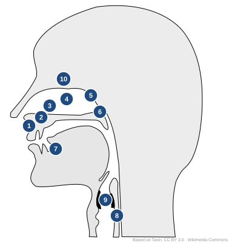
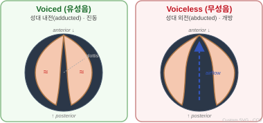
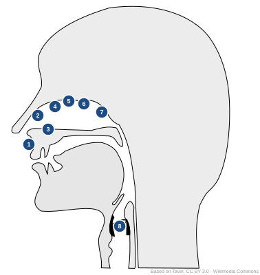

Basics & Articulation
Ch. 1.1 – 1.3.3 · Applied English Phonology, 4th Ed.
English spelling is inconsistent. One symbol can represent many sounds, and one sound many spellings.
| # | Structure | Function |
|---|---|---|
| 1 | Lips (Labia) | bilabial sounds |
| 2 | Teeth | dental/interdental sounds |
| 3 | Alveolar ridge | alveolar sounds /t d s z n l/ |
| 4 | Hard palate | palatal sounds /ʃ ʒ j/ |
| 5 | Velum (soft palate) | velar sounds /k g ŋ/; nasal coupling |
| 6 | Uvula | uvular sounds (non-English) |
| 7 | Tongue (tip/blade/body/root) | most consonants |
| 8 | Larynx / Glottis | voicing, /h/, glottal stop |
| 9 | Vocal folds | voicing (vibration) |
| 10 | Nasal cavity | nasals /m n ŋ/ |

Based on Tavin, CC BY 3.0 · Wikimedia Commons

Superior view of the glottis · Custom SVG (CC0)
Vocal folds vibrate during production → periodic sound wave
Folds open (abducted) → turbulent airflow, no vibration
Superior (laryngoscopic) view · Voiced → Voiceless cycle (~6 s loop)

Based on Tavin, CC BY 3.0 · Wikimedia Commons
WHERE in the vocal tract does the constriction occur?
| # | Place | Articulators | English Consonants |
|---|---|---|---|
| 1 | Bilabial | both lips | /p b m w/ |
| 2 | Labiodental | lower lip + upper teeth | /f v/ |
| 3 | Interdental | tongue tip between teeth | /θ ð/ |
| 4 | Alveolar | tongue tip/blade + alveolar ridge | /t d n s z l ɹ/ |
| 5 | Palatal | tongue body + hard palate | /ʃ ʒ tʃ dʒ j/ |
| 6 | Velar | tongue body + velum | /k g ŋ/ |
| 7 | Glottal | at the glottis (vocal folds) | /h ʔ/ |
Consonants: /p b m w/
Consonants: /f v/
| Symbol | Example |
|---|---|
| /ʃ/ | ship, mission |
| /ʒ/ | vision, rouge |
| /tʃ/ | church, watch |
| /dʒ/ | judge, gym |
| /j/ | yes, you |
| Symbol | Example |
|---|---|
| /k/ | key, back |
| /g/ | go, bag |
| /ŋ/ | sing, bank |
| Symbol | Example |
|---|---|
| /h/ | hat, ahead |
| /ʔ/ | uh-oh, button (AmE) |
Voiceless left / Voiced right in each cell
| Manner \ Place | Bilabial | Labio-dental | Inter-dental | Alveolar | Palatal | Velar | Glottal |
|---|---|---|---|---|---|---|---|
| Stop | p · b | — | — | t · d | — | k · g | ʔ |
| Fricative | — | f · v | θ · ð | s · z | ʃ · ʒ | — | h |
| Affricate | — | — | — | — | tʃ · dʒ | — | — |
| Nasal | m | — | — | n | — | ŋ | — |
| Approximant | w | — | — | l · ɹ | j | (w) | — |
초성 자음의 조음 위치가 같으면 S, 다르면 D
| Word pair | S / D | Place(s) |
|---|---|---|
| those – Thursday | S | interdental |
| simple – shackle | D | alveolar / palatal |
| phonetic – fictional | S | labiodental |
| goose – gerrymander | D | velar / palatal |
| scissors – zipper | S | alveolar |
집합에서 특성이 다른 음소 하나를 찾으세요
/l · d · s · t · k · z/
/k/ — velar; 나머지는 모두 alveolar
/f · ʃ · tʃ · z · θ · ʒ · ð/
/tʃ/ — affricate; 나머지는 모두 fricative
Phonetics (2): Manners, Vowels & Suprasegmentals
Ch. 1.3.4 – 1.6
교재 Ch. 1.3.4 – 1.6 (pp. 16–29) 읽어오기